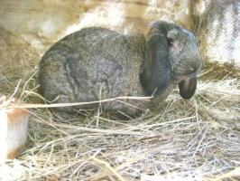
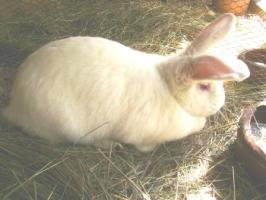
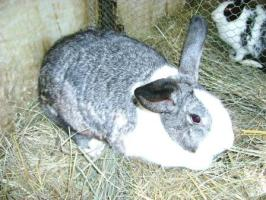
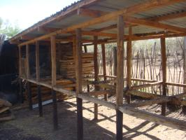
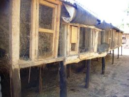
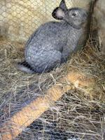
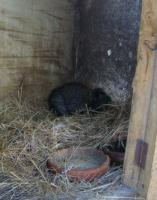
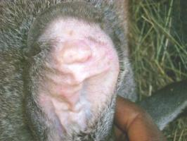

Rabbits (new with animal welfare information)
{kind=link}
{kind=link}
{kind=link}
Good health in the rabbits comes from keeping the environment clean, dry and well-ventilated and avoiding overcrowding.
Introduction
Understand rabbits as the animals they are
The big eyes situated at the sides of the head clearly indicate that rabbits are hunted animals, and many big and smaller predators want rabbit meat.
Rabbits are alert, awake or sleeping, and have very good senses, in particular hearing and smelling, but they can see both 360o around them and in the air, but their eyes are very poor in bright sunlight. Therefore, they forage in early mornings and in twilight. If living in safer conditions they graze several hours every day. They can often sense vibrations in the ground from other animals running or walking. They have a peculiar flight behavior running in straight line and then abruptly changing direction, to shake off the pursuer. When they sense danger, they stomp their muscular hind legs in the ground to warn their fellow rabbits.
They give birth to 4-12 kittens, which are well hidden in a nest the first 8-10 days of their lives, blind and naked at birth, and only need feed morning and evening. They can have several litters during a one-year period. Rabbits are pure herbivores and born to live on the ground; they forage and hide on the ground, and do not like to be lifted, but they like to climb up on small hills or somewhere where they can get a better overview. They are curious animals, even though they have to be alert and are easily scared. Most rabbit breeds live underground in holes and others in nests on the ground.
They are social animals, living in colonies or groups. They have been introduced to some environments where they did not live naturally, and have caused major problems because they did not have predators there and therefore spread all over the area, e.g. in Australia. Some rabbit breeds are quite sensitive to heat and do not tolerate temperatures more than 35oC.
Rabbit production with growing potential
Rabbit production is one of the livestock enterprises with the greatest potential and room for expansion in Kenya. This is because of their minimal investment requirements and ability to reproduce fast. Their feed requirement is low, especially with regard to demand for grain. Their housing and disease control management requirements are also low. Yet their meat is highly nutritious and healthier source of protein when compared with other sources of meat. Second to ostrich, rabbit meat is the highest protein meat available. It is fat and cholesterol free, so is not only highly nutritious but also very easily digested. It is, therefore, much better value than chicken. The potential for rabbit production is high, considering that other sources of meat are often scarce and out of the financial reach of most families.
Rabbit production has experienced a steady growth in the past few years, with gender biases associated with its production fading away. This is a significant change considering that for many years, rabbit production in Kenya was confined to the youth, mainly 4-K club members and young farmers. Though rabbit meat marketing is yet to gain ground, there is hope that with the growing awareness of the benefits of rabbit meat, it will be possible for rabbit meat to be introduced into the regular meat market.
The realization that rabbits are well suited to rapid production of protein has increased the number of industrialized production units just like in poultry. The most popular breeds used in the meat industry are the New Zealand White, Californian, Flemish Giant, French Ear lop, Chinchilla and Dutch. Other breeds include the Angora primarily kept for fur and as pets; most of the locally available breeds are cross breeds.
Exotic breeding stock is not readily available, although for the small farmer, there is nothing wrong with local stock because they can stand the local conditions usually more easy than exotic breeds. Marketing is still a big hurdle for the small farmer and, before venturing into the business, prospective farmers should research the market before they start. As the market grows, better stock will inevitably become available and more efforts can be made to improve management (including feeding). There is a shortage of facilities that will accept pelts for tanning in East Africa which is a shame, as the rabbit pelts are a much sought after commodity in the fashion and fabric industries around the world.
Breeds and Breeding
It is interesting to note that East Africa does not have wild rabbits. The brown creatures that are seen, mostly at night, on the plains are hares, not rabbits. The rabbits used for meat production are pure breeds of crosses of:
- New Zealand White: has a good growth characteristic, capable of attaining slaughter weight of 3 kg live weight within 12-14 weeks depending on feeding regime. It is one of the best commercial breeds that grows to a weight of about 5 kg and has all-white colour making its fur marketable. It is considered a dam breed because of its excellent mothering instinct.
- Californian White: it is bred to have broad shoulders and meaty back and hips and hence has a good meat breed with good dressing percentage. It is shorter and stockier and is white except for its ears, nose, feet and tail which are either dark grey or black. It is an ideal sire breed for interbreeding with other rabbit breeds for purposes of meat production.
- Flemish giant: this is one of the largest rabbit breeds, weighing up to 7 kg live weight. Though Kenyan farmers like it because of its size, this breed is not an ideal meat breed because of its high bone to meat ratio and its slow growth. Interbreeding it with other breeds may help improve its characteristics
- French Ear-lopped (sometimes referred to as Belgian Flop): The Lop family shares the distinction of being one of the oldest fancy breeds. The ear length, shape and size of the rabbit are a major attraction with farmers. It is favoured for meat production because of its body weight.
- Dutch: fairly small but compact rabbit with shorter forelegs. It often has characteristic markings.
- Kenya White and crosses from them
- Chinchilla: The Chinchilla is kept almost exclusively as a pet or for fur, which we do not support.
|  |
| Lop eared rabbit buck |
| (c) Valerie Corr, Naivasha, Kenya
|
|  |
| Large Kenya white crossed with Lop - note good size |
| (c) Valerie Corr, Naivasha, Kenya
|
|  |  Flemish giant (c) Nafis |
| Kenyan x lop | |
| (c) Valerie Corr, Naivasha, Kenya
|
 Dutch (c) Nafis
|  Chinchilla (c) Nafis |
Breeding from selection of animals, to weaning of the young rabbits
In rabbits, males are referred to as 'Bucks' and a females as 'Does' and their young are referred to as 'kits; 'kit' is an abbreviation of 'kitten'. It is important that you plan your breeding, otherwise you could end up with more weanlings than you can cope with. It is very easy to get over crowded very quickly as rabbits are very prolific breeders. Plan how many weanlings you want to have in a year and how many does you need to reach that goal. One doe can have 4 - 5 nests per year with each time up to 8 kits. When they all stay alive one doe is able to provide you with up to 40 weanlings per year.
It is advisable to keep a breeding sheet on the door of each doe pen. You should record the number of the doe, the date of birth, date of service, the buck used, the date of kindling (giving birth), number of kits reared, any deaths, as well as dates of deworming (You could include a column for 'comments' on the far right of the sheet - i.e., whether the doe adopted another's young or, indeed, had so many kits that she had to foster some of them).
Example of headings on breeding sheet:
It is suggested that these should be posted on the door of every breeding doe, protected by a plastic bag and stapled where the rabbit cannot destroy it. Every breeding doe and buck should have a name and number, which would be at the top of the sheet. If these sheets are kept up to date it is very easy to keep track of your breeding program.
| Doe number: 5 (Marie) | Date of birth (May 2013) | ||||
| Date | Buck number (Name) | Kindling | Number of kits born | Number of kits weaned | Notes |
| 11 May 2015 | 12 (Charles) | together for 10 minutes | |||
| 11 June 2012 | ok | 7 | + 1 still born | ||
| 15 August 2015 | 6 | 1 lost after 3 weeks | |||
| 1 September 2015 | 12 (Charles) | 15 minutes together, no mating | |||
| 2 September 2015 | 12 (Charles) | together for 10 minutes | |||
Temperature regulation in grown-up and newborn rabbits
Rabbits are very adaptable animals and are able to deal with changes in temperature because they have an inbuilt mechanism for controlling temperature fluctuations. In cold climates the rabbits will curl up to keep warm and in hot weather they will stretch out (with the back legs stretched out behind them) so that they can lose as much heat as possible by radiation and convection.
At the same time their ear temperature will increase for cooling the blood. The ideal temperature is from 10degC - 26degC. They are able to survive in temperatures as low as 0degC and as high as 33degC but their efficiency will be compromised at these temperatures.
Heat regulation of newborn rabbits is, however, different. Kids are born blind, naked and helpless; and it is interesting to note that they are born with teeth. To keep warm they huddle together in a nest made by the mother with fur from her chest. If the temperature rises, the kits will move apart. A sudden drop in temperature can disable their temperature control before they can huddle together again, and a kit can die of cold 10 cm away from the group. The breeder must be watchful for such instances.
Rabbits are sensitive to humidity below 55%. They feel comfortable if the humidity level ranges from 60 - 70%. The problem arises during the rainy season when temperatures and humity fluctuate. Air which is too hot and dry is even more dangerous. This is why it is so important to have sufficient ventilation without draughts.
Gestation Period: On the average 30 - 32 days and the rabbits born on any day between the 28th and 34th day after mating, usually survive. The duration of gestation is also affected by the time of year, the size of the doe and, above all, the size of the litter.
Pseudo Pregnancy: A doe may exhibit pseudopregnancy (behaves as if pregnant when it is not) but the symptoms do not usually last beyond the 18th day. The best way to confirm pregnancy is to palpate the abdomen gently on the 10th - 14th day.
Mating: When a doe is ready to be mated she may become restless and nervous and may have a red and swollen vulva and will be happy to join the bucks. Rabbits are spontaneous ovulators, so can be put in with the buck and covering will take place within minutes. A receptive doe raises her tail and allows mating. The buck will make a growling noise and fall to one side when mating has taken place. The doe should be removed immediately. If mating has not taken place in 15 minutes the doe should be removed and returned later. If left with the buck they will both become bored and the buck will lose interest.
Caring for the Doe: A pregnant doe deserves special care and management if the farmer is to achieve the best results. Although the general care of the doe is the same as that for the entire flock, it involves a slightly different management strategy. Special care should be taken in respect of feeding; environment; kindling and housing as well as the diet.
A balanced diet will ensure better fertilization, reduce the risk of embryonic deaths and ensure better fetal growth; see feeding for more advice also on feeding the pregnant rabbits.
Miracle births
Cases of "miracle births" have been observed. This takes place when a doe produces young when it is absolutely certain that she has not been to the buck. Some does who will not accept the buck may already be pregnant even though they have not been with a buck. It has also been recorded that a doe that is in kit is sometimes able to retain sperm from a different covering, to produce another litter later.
Kindling: The birth of young rabbits is known as 'kindling'. This usually takes place at night and the doe should not be disturbed by noise or frightened by animals. This can cause her to eat or abandon her litter. After birth, the mother will lick her young and let them suckle. The earlier this happens the better their chance of survival. Most does are good mothers and are very protective and careful of their litter.
Occasionally a doe will eat her young. There are factors that can be attributed to this, such as shortage of water before kindling, or noise and fear. If, however, she repeats this behaviour with subsequent litters she should be culled because this trait can be passed on to future generations.
Fostering: This means taking kits to another doe. This could be an option if a mother dies or abandons her litter or does not allow them to suckle. The other reason is if the litter is bigger than 8 kits, when it is advisable to foster the excess to mothers with less than 8 kits.
Litter size and frequency: Under good management, a doe can produce 4 to 5 litters per year with 7 to 10 kits per litter. Usually smaller litters thrive better than larger ones, but larger litters can be sustained with improved feeding. It is essential, therefore, to ensure that your does receive adequate concentrate feed, plenty of green fodder, supplements and plenty of clean drinking water. It should be remembered that a doe has 8 teats. If she produces more than 8 kits the smaller kits may not receive sufficient food. It is very easy to put the weaker kits with a doe who has fewer babies of the same age. Does are very accepting of 'outsiders'.
First breeding: With good feeding practices the well-developed doe should be ready to breed at 5 months of age. With poor feeding practices this may not happen till 7 to 8 months of age. Some first time mothers will eat their first litter, or abandon them. The dead kits should be removed immediately and disposed of. The doe should be rested for at least a week before being returned to the buck. If a doe has three unsuccessful breedings, she should not be used for breeding and retire.
Breedings after wean: Mature does can be served one week after they wean.
Weaning: At weaning (one month) the kits must be sexed and kept separate as they are able to breed from a very young age. If you allow your rabbits to breed too young the result will be small and weak off-spring. They could even be born with birth defects and a young mother may not be able to look after her offspring properly, or she may even eat them all at birth or she herself may die.
If one month is gestation and one month is for rearing young, the doe could not be taken to the buck more than once in two months. But this way you could have a continuous supply of meat. Depending on how many does you keep, you can work this out:
- Gestation is one month
- One month is with the mother
- 3 - 4 months to slaughter.
Production period: when does and bucks perform well, they can be kept for 4-5 years after which time their production should be assessed. If the doe is still producing decent sized litters with healthy kits, it is possible to keep her for a further year, after that she should retire and be kept as a pet. The same applies to the buck. It has been noted that older bucks may start to produce small or weak kits, in which case they should retire and kept as a pet.
Care of the young: A couple of days before giving birth the doe will start collecting hay in her mouth to make a nest. She will then pull hair from her chest and under her neck to line the nest. She will pull out more hair after haven given birth and cover the babies. This is the time that the young have to be watched carefully:
- Kits are born blind and naked. The first 35 days of their life are crucial. They are usually confined to the nest for at least two weeks, sometimes longer. They should not be separated from their mother before 4 weeks of age. If they are weaned early they may die of separation shock.
- For the first 20 days the only food for the kits is their mother's milk. The mother feeds her young only once in 24 hours and only for 3 - 5 minutes. The doe must, therefore, have access to plenty of good food and water to ensure that she has enough milk for the litter.
- It is essential that the kits not get cold, especially in the first few days after birth. The nest needs to be checked to ensure that the babies are not carried out of the nest by the mother after feeding (check early mornings as feeding normally takes place during the night). It is quite safe to handle the young and return them to the nest.
- If they are found outside the nest and cold, (the kits will feel cold and the skin will be wrinkled and 'sticky' to the touch) it is essential to warm them up quickly or they will die.
- Once they are warm (the kits will become a healthy pink colour, warm to the touch) they can be returned to the nest. Warming them can be done by wrapping them lightly in a cloth and putting this on top of a hot water bottle in a box. Make sure that the kits are protected from the plastic cover. They should be turned a couple of times to make sure that they are properly warm.
- They will start to squeak and wriggle once they are warm enough. Remember that every dead kit is a lost life.
- The kits will start coming out of the nest after 15 - 16 days and will start trying to chew green matter and concentrate whilst still suckling. They will gradually eat more solid food and suckle less.
- At one month the kits should be weaned and the males separated from the females as they can start breeding at a very young age. Determining the sex of the kits is not easy, but practice makes a master: Lay the kit on its back in your hand and gently blow on the hair around the genital area and, with 2 fingers, gently separate the genitalia towards the tail. The males will show a small upwards protrusion while the females will show a small opening. This is easier done by two people. One holding the kit and one doing the sexing. Kits generally lie very still when laid on their backs. It is essential that they are treated gently to avoid injury.
- The kits should then be put in separate weaning houses. A double pen of 90 x 180 cm can comfortably house 6 young rabbit growers. Remember there are now more rabbits in each cage, so they must be fed more food accordingly and given more water if they are to grow well.
- At weaning it is advisable to routinely (no preventive treatments in organic rabbit production) treat the weaners with coccidiostat (the same one used for chicken). 1 ml dawa/litre of water for 3 days will protect them from diarrhea and stress after weaning.
- It is also advisable to deworm them a week later with 1/4 ml of Albendazole administered by mouth with a small syringe (without needle) is enough for each one month old rabbit. Be careful, not to put the syringe too far into the mouth or you may damage the throat. Death will almost certainly be the result of rough handling.
Although there are no regulations for organic rabbits as such, the general principles for organic production should be applied.
(see under: The IFOAM principles and animal health and welfare)
Management: Handling, Slaughter
Rabbits should always be handled gently but firmly. If the rabbit feels insecure or afraid it will damage itself and, in all probability, the handler.
NEVER lift a rabbit by the ears. The most common and safest method is to grasp the ears close to the head with one hand, while the other hand takes the full weight of the rabbit. The hand holding the ears restrains the rabbit and prevents it from struggling, without damaging the joints where the ears meet the head.
When handling kits, they should be picked up by placing the whole hand, gently, over the kit and curling the fingers around it. Care should be taken not to squeeze the kit as they are very fragile and it is very easy to damage them.
When handling rabbits, of any size, for whatever reason, the easiest and safest way is to wrap the rabbit in a cloth and pick it up. The cloth or sack will give the rabbit a sense of security and it won't struggle.
Viciousness in rabbits
It occasionally happens that a rabbit becomes vicious and attacks those who attempt to handle it. A doe may become very aggressive when she has young - this is a natural instinct and should be respected. Bucks can also become aggressive for no obvious reason. However, aggression is almost always as a result of bad handling or teasing. It can also be the result of lack of water - so make sure that water is always available.
There are instances where a rabbit may become aggressive for none of the above reasons. If this behaviour becomes habitual, culling should be considered. A rabbit has the ability to open its mouth very wide, their teeth are very sharp and their bites are deep and painful.
Slaughter
It is important that the rabbit is killed very quickly and in the most humane way possible.
The quickest and kindest way to do this is:
- Hold the rabbit in your left hand by its back legs. With your right hand hold the rabbit's head between your index and middle fingers, under the chin and against the base of the skull. Lift your right hand to shoulder height, stretching the rabbit, and pull the head quickly and sharply. If you try to do this any other way it will not work.
- When the rabbit is dead, it should be hung by one back leg. The head is removed. The feet are clipped off. A small slit should be made on the inside of the back leg that is not attached to the slaughter post. The skin is peeled off this leg. The skin is then gently loosened round the body and front legs. You will then be able to take the skin off the remaining back leg, and by pulling down, so that the skin is now inside out, you will be able to peel the skin off like a sock. The rabbit is then gutted and entrails removed.
Housing
The rabbit unit should be located in a peaceful environment, away from the noise and bustle of human and animal noise. The unit must fulfill the following function:
a) protection from extreme influences of weather and noise, which could interfere with the performance of the rabbits
b) protection from predators including birds, snakes, insects and rats. While planning a unit, the following should be taken into consideration:
|  |
| Unfinished rabbit units |
| (c) S. Fontana, BioVision
|
- The exterior should provide protection against heat but at the same time it should be properly ventilated without draughts.
- There should be separate units for the does and bucks. Breeding stock should be kept in one unit and the 'meat' unit should be separate.
- Three or 4 does and one buck would be more than sufficient to keep a household supplied with meat all year round. You would therefore need:
- A pen for the buck
- A pen for each doe
- At least 2 weaning pens - one for females and one for males
If there are more does, you need more pens for the does but also more weaning pens. When the weaners are growing not so fast because of lower feed quality, they stay longer and more weaning pens are needed.
To grow healthy, rabbits must be kept clean because dirty rabbits are unhealthy rabbits. It is best to house them off the ground as follows:
|  |
| Rabbits housing |
| (c) S. Fontana, Biovision
|
- The house should be 90 cm off the ground, should be 90 cm high and 90 cm wide. As roofing sheets come in 2.5 meter lengths it makes sense to build blocks of houses 1.8 m wide so one roofing sheet can be used to cover 2 houses.
- The floors should consist of chicken wire (with the smallest size holes) so that droppings and urine fall through to the ground. This can then be swept up daily and used to mix with compost.
- The house should have a layer of hay/dried grass or straw as bedding. This is a very important part of the rabbit's diet. They will eat a lot of this bedding during the night.
- Rabbits do not tolerate windy conditions, so houses should be placed in sheltered areas and windbreaks provided where appropriate.
- Rabbit houses should be cleaned every day. Wet bedding should be removed and replaced with dry material. If rabbits are left with soiled beddingt, hey will not eat the bedding material and it will encourage flies and diseases to multiply.
- Dirty or wet houses will result in a very strong 'rabbit' odour which will taint the meat. A soiled pen is stressful for the rabbit and it will also mean that the pelts become soiled and 'felted' which makes them unusable.
- Mud hutches and thatched houses can also be constructed but they should be off the
- ground and kept clean as described above.
- NEVER be tempted to try and save space by constructing houses in 'tiers' (one on top of another). This will lead to all kinds of problems as the lower houses will become fouled by the droppings and urine from the upper level.
- Exposure to light plays an important role in reproductive efficiency. Bucks exposed to light for 8/24 hours are more sexually active. It also improves the productivity of the doe. It is possible to make up this light requirement using artificial light, but this is an expensive way of solving the problem.
|  |  |
| Rabbit house floor consisting of chicken wire | Rabbit on hay on wire |
| (c) S. Fontana, Biovision | (c) S. Fontana, Biovision
|
Feeding
Rabbits are coprophagous animals which means that they form two kinds of fecal pellets. One type is what the farmer will see on the floor of the hutch or below the cage. The other is the one that the rabbit swallows whole directly from the anus. Coprophagy is a peculiar physiological and natural habit which increases the digestive efficiency, especially from protein. The fecal pellets eaten contain three and half times more crude protein than the normal pellets which is probably why they instinctively eat these fecal pellets.
The feed conversion ratio of rabbit is considered to be half as efficient as that of cattle, due to the rapid rate of passage of food. More so because microbial digestion of fibre takes place in the hindgut rather than in the rumen. The digestive tract of a rabbit is known to be adapted to fibrous feed, but the hindgut is selectively able to excrete large fibre particles in feces, and retain the smaller particles. Rabbits are able to consume large amounts of forage - greens of many types - which people do not eat. They convert this forage into meat which people do eat. Anyone with fields or a garden will have maize stalks, sweet potato vines, fruit peelings, peanut vines, cabbage or lettuce leaves, carrot tops or any number of other greens in addition to lots of wild plants and kitchen garbage on which rabbits thrive. Many of these greens would otherwise go to waste. They would need, however, a bit of grain each day. If rabbits are not fed well they cannot give the best returns In large rabbit farms the bulk of expenditure incurred in breeding, producing and keeping rabbits is on concentrated feeds.
Interestingly, when available, rabbits prefer green fodder which is low in crude protein and is easily digestible. If they are forced to eat less preferred plant parts the feed intake may decrease drastically. The large capacity of the rabbits digestive organs enables it to compensate for seasonally lower concentrates in feed during cold periods and, during the warmer weather by a correspondingly higher intake. It is for this reason, accompanied by corpophagy, that the chances of survival during feed and water deficiencies are improved.
Rabbits can survive on a wide range of feed, thus enabling the keeper to adopt a feeding program to suit the prevailing local circumstances. There are different types of foodstuffs that are used as rabbit feed. On small holder farms, where pelleted feeds are not available and/or are to expensive, rabbits can produce on many kinds of available local feeds. In large rabbit farms, pelleted feed are most used which is more balanced and which will cut down on wastage.
Feeds can be grouped as:
- roughages, including hay, green leaves and weeds. As a precaution, if wild herbs are to be offered, a knowledge of poisonous plants is necessary.
- succulent foodstuffs, including green grass, carrots and other green food
- concentrates, including all cereals
- compounded feeds such as complete pelleted feed
Rabbits require different quantities of food at different stages of growth. In Table 1 is shown that rabbits producing milk and pregnant rabbits needs most feed (protein and minerals). Non-producing rabbits have least requirements. The amount of feed what should be supplied depends on the type of feed. A lactating doe will need 350g - 380g concentrates per day. When fed with green fodder, she needs much more and up to 1.5 kg (and takes with that feed also a lot of water). When hay is fed (with a lower energy content) she needs to eat 700 grams a day or more.
A pregnant doe requires 0.60 Mj digestible energy. That can be eaten in the form of green forage or as concentrates or as a mixture of both types of feed. Concentrated feed can be grains or other feed with a high feeding value (low moisture content). The maximum intake of a pregnant doe is about 600 grams of dry matter per day. From concentrates with 90% dry matter the doe will eat 660 grams to satisfy her needs. From fresh green grass with 25% dry matter, the doe has to take 2400 grams to ingest 600 grams of dry matter. That is a too big amount and part of the ration should consist of high dry matter feed (e.g. grains) According to table 1, the 600 grams dry matter should roughly contain 90 grams of crude protein, 12 grams of crude fat, 80 grams of crude fibre, 3 grams of lysine, 6 grams of calcium and 4 gram of phosphorus. There must be adequate amounts of vitamins A, D, E, K and B.
| Growth | Maintenance | Gestation | Lactation | Does & Litter | |
| Digestible energy (Mj) | 10.5 | 8.9 | 10.5 | 10.9 | 10.5 |
| Crude fibre (%) | 13 | 15 | 13 | 11 | 14 |
| Crude protein (%) | 16 | 12 | 15 | 17 | 17 |
| Crude fat (%) |
|
| 2 |
|
|
| Calcium (g) | 4.5 | 6.0 | 6.2 | 9.2 | 9.2 |
| Phosphorus (g) | 2.6 | 4.0 | 4.0 | 6.0 | 6.0 |
| Vitamine A (IU) | 6000 |
| 12000 | 12000 | 10000 |
Minerals
Minerals are essential for proper growth and should include calcium, phosphorus and sodium chloride. On average the diet should include 0.5% - 0.7% phosphorus and 0.7% - 1.0% calcium. Lactating does require a slightly higher amount of phosphorus or calcium. It is a good idea to put minerals in the feed (for instance Coopers Macklic powder).
Vitamins
Vitamins are an integral part of the feed. In a mixed ration there will be enough vitamins to supply the rabbits needs. Vitamins are abundant in roughages. Concentrate feeds also contain vitamins.
Hay/straw
- Crude fibre is an integral part of the diet and is essential for the digestive system and the well being of the rabbit. A good farmer will notice that the rabbit eats much of its bedding during the night and will replace it the following day when the pens are cleaned.
The average concentrate intake of an animal ranges from 120 g to 150 g per day. The concentrate feed should be supplemented with green food or hay. The roughage is best fed in the evening as rabbits are much more active at night. - Roughages and greens should be available all the time. Rabbits eat most vegetable matter such as potato and carrot peelings, vegetable scraps etc. They thrive on weeds (especially chick weed, amaranth and thistles).
- Other examples of good rabbit feed include lucerne, chopped napier grass, sweet potato vines and fresh green grass if it is available.
- After the rains there is usually an abundance of wild herbs and weeds that rabbits will enjoy but ensure at all times that your rabbits have a varied diet of roughage and greens.
Concentrates (rabbit pellets or rabbit mash) should be fed twice a day as follows:
- 0 - 16th week after weaning give 65 - 100 g/day
- Pregnant does give 225 g/day/doe
- Active Buck give 90 - 100 g/day
It is recommended that a square piece of plastic or sacking is placed under the feed bowl to catch and reuse spilled feed. The most food and water efficient food bowls are made of clay with an inward lip. These are too heavy for the rabbits to turn over and the lip prevents spillage. The water bowls should be scrubbed at least once a week to prevent algae growing. This will foul the water.
NOTE: Do not feed rabbits with tops of tomato or Irish potato nor with mint as they are poisonous.
Feeding Time
Rabbits are very 'time conscious'! They expect food at the appointed time and you may find them waiting by their doors at that time. A haphazard feeding schedule will cause distress to their digestive system. It is best to feed them twice a day: morning and evening.
Cleanliness and Hygiene
Feed, bedding and water should all be fresh. If concentrates are fed they should be stored in weather/vermin proof containers (drums with lids and old deep freezes make excellent feed stores). Keeping the feeders and water bowls clean can yield dividends to a farmer. Failure to maintain hygienic conditions will result in frequent disease outbreaks.
Tip: A spray bottle of 50/50 white vinegar and water makes a gentle disinfectant for wiping off surfaces and reducing odour.
Economic feeding of rabbits
A balanced diet made up of high quality feed ingredients, and hay, is recommended for use in large scale units. Mash feeding alone might lead to a low conversion ratio resulting in higher feed intake. That can only be economically interesting when feeds are low in price.
Most rabbit farmers in East Africa are dependent on commercially made complete rations. Efforts should be made to supplement this with green roughage, depending on availability. This will go a long way to keeping the cost of feeding down, as this is a major expenditure for the small farmer and should be kept at the barest minimum without compromising the requirements and welfare of the rabbits.
Water
Rabbits need plenty of fresh water. It is wrong to assume that rabbits obtain sufficient water from their green food. Rabbits consume a surprising amount of water and it is important that this is readily available. Place a small water bowl with a solid base to avoid being overturned in each cage, and fill the bowl with water twice a day. Alternatively, in large enterprises a drip water system could be useful. This is more expensive, it saves time, the rabbits have water at all times they learn very quickly how to use it
Common Rabbits Diseases
Good health in the rabbitry comes from keeping the environment clean, dry and well-ventilated and avoiding overcrowding.
The problem of disease is two fold in domestic rabbits. The first and most important part is prevention, the second concerns elimination and treatment of disease when it occurs. A healthy rabbit should recover rapidly from minor ailments and the keeper must direct every effort to assist the recovery and also to enable the rabbit to resist disease. Hygiene and sanitation play a big part in good management.
Quarantine new rabbits
- Rabbits should be allowed direct access to sunlight as it also acts as a germicide besides having a beneficial effect
- Destroy the affected rabbits in any outbreak. These complications can only be overcome by the keeper's vigilance.
- Prevention of disease is not a subject to which one should turn only when disease appears, that is usually too late. It must form part of the rabbit keepers day to day management.
Some diseases spread so quickly that action must be taken immediately. Complete isolation of sick rabbits is essential. Early treatment is the only effective method of dealing with disease. A decision has to be made as to whether the rabbit can be saved and, if it can, is it financially viable to do so. If the rabbit is to be destroyed, it should be done humanely, away from the rabbit unit, and the carcass should be incinerated without cutting it up as this could spread bacterial infections through the unit.
A farmer may well be able to diagnose the problem, but it is advisable to seek veterinary advice in the event of a disease outbreak. Prevention and treatment of common disease, along with hygienic measures are necessary to avoid outbreaks. One can often draw conclusions from the symptoms with regard to the location and type of disease, along with the chances of recovery.
Early recognition of disease is most important as there is more chance of recovery if the treatment is started early. It is quite useless to commence treatment when the disease has progressed to the stage that the rabbit is obviously dying. A watchful rabbit keeper will be quick to notice any change in appearance of any of his stock.
- A fall in weight is one of the first signs that all is not well. The reason for slow weight gain, loss of weight or lack of appetite should be sought.
- A good keeper will notice any change in the feces.
- The coat is a good indication of a healthy rabbit. A dry, dull, harsh or patchy coat indicates something is wrong. A sleek, glossy coat indicates good health.
- A healthy rabbit is alert. Any sudden noise or movement will awaken its immediate interest. The rabbit's movements should be free and easy and it should not sit huddled in a corner.
- It's breathing should be even. The respiration rate of an adult rabbit is 30 - 50 breaths per minute. Shallow (rapid) breathing is an indication that something is wrong.
- The eyes should be bright with no discharge from them or from the nostrils, mouth, vent, anus or teats.
- The rabbit should not feel 'bony' and the muscles along either side of the spine should be firm and full, with no swellings, which are indicative of cysts or abscesses.
- A healthy rabbit is full of vitality and the farmer should aim to keep his rabbits like this.
Causes of diseases
Diseases may be caused by:
- Bacteria: Diseases of the rabbit caused by this group though relatively rare, include pasteurellosis in various forms and tuberculosis.
- Viruses: Few diseases are caused by these organisms, the most common being myxomatosis which is not seen in East Africa
- Animal parasites: Includes single celled animals or protozoa which produce coccidiosis, flukes, flatworms and roundworms. In this group are also fleas, lice, ticks and mites which can produce disease such as ear canker or, alternatively, can carry disease.
- Nutritional deficiencies: A shortage of vitamins, minerals and other essential items of food which give rise to ailments such as rickets, reproductive failures and other problems.
The spread of diseases
Diseases can be spread by physical contact, confinement of healthy animals with diseased stock, contamination of feed, by rodents and birds and through water and the air.
Many potentially harmful organisms are present in the animal's body in such small numbers that symptoms of disease do not manifest themselves, provided the animal has a good resistance and a well working immune system. The disease will only appear if the rabbit is subjected to challenges such as bad feeding, cold or any other stress factor
Common Rabbits Diseases
Some of the commonly occurring diseases in rabbit units are:
This is probably the most common disease in rabbit units. Once a farm is infected with coccidiosis, it is very difficult to eliminate it completely or permanently. It is difficult to cure hepatic coccidiosis.
Symptoms:
- Anorexia (not eating)
- Pendulus and distended abdomen followed by progressive weakness, diarrhea, constipation and jaundice
Prevention:
- It is best prevented in well constructed rabbit units, where the rabbits are not living in cramped, crowded or dirty conditions.
- Cages should be disinfected at regular intervals and cleaned daily. Nest boxes should be disinfected between kindlings.
- Water bowls and feeders must be cleaned and disinfected regularly.
Treatment:
All the drugs used are prophylactic (preventing infection) and should be given when there is risk of disease. There are many coccidiosis preventative drugs on the market in East Africa, most of them for poultry, but these are suitable and effective in rabbits.
The bacterium Pasteurella multocida causes a variety of diseases in rabbits. These include: snuffles, pneumonia, otitis media, conjunctivitis and abcesses. Snuffles is not a fatal disease but the animal can develop pneumonia, pleurisy or acute pasteurellosis as secondary infections. The disease may migrate from the nasal cavity through eustachian tube to the middle ear, causing inflammation and may lead to torticolis, uncoordinated gait, inability to take food and water and loss of weight. This particular disease does not respond to treatment.
Symptoms:
- In snuffles, the main symptom is a thick sticky, white discharge from the nose which the animal wipes away with its fore legs.
- There is also constant sneezing, which will encourage the spread of the disease.
Prevention:
- Avoid cold draughts in the house.
- Construct rabbit hutch according to the recommendations.
Treatment:
Snuffles and pneumonia can effectively be treated by a combination of penicillin and streptomycin administered intramuscularly by injection.
c) Pneumonia
It is caused by poor housing, overcrowding and poor ventilation especially in cold areas. Ensure that there is sufficient bedding to prevent draughts coming through the floor, and that the rabbits are not subjected to cold winds, especially at night. It is advisable to have the ends of the units protected with plastic or heavy duty shade netting. It is also advisable to have roll down 'curtains' over the front of the unit, made of plastic or shade netting, that are let down at night to keep the whole unit warm.
d) Conjunctivitis
P.multocida goes from the nasal cavity to the eye through tear duct and causes reddening of the conjunctiva and a discharge from the eyes.
Treatment:
- It can be treated with antibiotic ophthalmic ointments and drops.
e) Abcess
Subcutaneous and visceral abscesses are quite common in rabbits. Subcutaneous multiple abscesses may be found on the face, body and lower jaw containing thick cheesy pus. Visceral abscesses however, may be found on the liver, heart and lungs. They may cause sudden death
Prevention/ Treatment:
- Drain the abscess of all pus.
- Irrigate with a solution of hydrogen peroxide and water, flush again with saline and then irrigate with iodine. If the abscess has been drained completely, one treatment may be sufficient. The hole will close spontaneously.
Ulcerated sores will develop on the back leg joint (the hock).
Prevention/ Treatment:
- Keep the cages clean. Dirty wet cages are the source of the infection.
- Open the ulcerated sores and clean thoroughly.
- Apply antiseptic dressing.
- Failure to treat will certainly be fatal.
If the temperature soars beyond 35 degrees centigrade, the rabbits will become restless. They will start panting and blood will ooze from the nostrils followed by death.
Prevention:
The only way to prevent this is to transfer the animals to a cooler situation.
Sudden disturbance, fear or excitement may leave rabbits paralysed. They become helpless creatures and their activity is restrained. There is no cure for this deadly disease. The breeder should avoid strangers entering the unit for curiosity and fun.
i) Hairball occlusion
Sometimes fur and wool are accumulated in the stomach, blocking normal passage of food. This may be cured with mineral oil or surgery.
The following diseases are incurable and culling is the only way out:
- Infections arthritis (thickening of the knee, hip, shoulder)
- Kidney fibrosis
- Leucosis (enlargement of liver, spleen, lumph nodes, whitish tumour foci in liver )
- Uterus carcinoma (tumour in uterus and lungs)
- Rabbit pox
- Paralytic tremor
- Epilepsy
- Encephalitis
- Spinal column injuries
- Syringomyelia
Parasites
a) Ecto-parasites
These include ear mange or canker, skin mange, mites, fleas, ticks etc.
Ear Canker and Mange
|  |
| Example of ear canker |
| (c) Valerie Corr, Naivasha, Kenya
|
- Ear Canker and Mange are caused by two types of mites - Posroptes communis var. cuniculi and Chorioptes cuniculi. The mites attack the inside of the ear and cause inflammation and severe irritation. The animal will be restless and will shake its head from side to side. It is possible that the ears will become damaged from banging against the side of the pen. This can lead to 'cauliflower' ear which look like bubbles under the skin on the inside of the ear. At the onset the ear will feel hot and will be painful to touch. With time, the blisters (which can be quite big) will become very hard.
Treatment/Prevention:- It is essential that the mites are dealt with as mites travel from one animal to another.
- Ears of the entire unit should be checked at regular intervals.
- Remove the crusts, scales with the help of cotton wool and then apply ear canker preparation (readily available in veterinary outlets). Alternatively, use ear drops.
- Until the mites are dealt with, the rabbit will continue to shake its head. You can easily test for them by gently inserting a cotton bud into the ear and wiping it round. If there are mites they will be stuck to the cotton bud with a brown substance. The mites look like tiny fleas. They cause a lot of distress to the rabbit and will spread if left unchecked.
- Alternatively, dust the rabbits with recommended chemicals or try diatomite powder if available. If you keep your houses clean and dry, the risk of infestation by the above is minimalized
Body or Skin Mange
This is not quite as common. It is caused by one of two species of mites: Sarcoptes cuniculi and Notoedres cuniculi. The mites burrow into the skin causing intensive irritation. Scratching will cause open sores. If the disease is not treated the animal is sure to die within a few weeks.
Prevention/Treatment:
- Keep the environment clean. Dirty units will harbour and encourage the spread. Hygiene cannot be emphasized enough.
These include Tapeworms,roundworms, etc.
Prevention:
- Deworm rabbits regularly with recommended drugs which are readily available in EA. It is advisable to do this every three months. This is a good time to check the teeth. Sometimes rabbit develop crooked front teeth. This greatly inhibits their eating. The crooked teeth should be clipped with nail clippers. Be careful not to cause injury to the jaw. The best clippers are those used by vets to clip dogs nails.
- It is also a good time to check the claws, which tend to grow very long and sharp because the rabbit is on wire. These should also be clipped if they are too long.
Products
Rabbit meat is becoming more popular in some of the more upmarket restaurants, especially where they are catering to European (French, German, Italian and Belgium) markets. However, it is still a relatively new market.
Rabbit meat makes an excellent roast meat (nyama choma) if cooked quickly. It is a tender meat and cooks very quickly. If the meat is being sold into butcheries or restaurants, it should be well presented and it is essential the carcasses have been cleaned properly. This can be done in three ways:
These are more often referred to as pelts. Most tanneries in Kenya will not accept rabbit pelts for tanning as they are considered too delicate. They are probably one of the most difficult skins to tan, but are much sought after. Pelts for tanning should be left inside out, no more than 4 together, packed into strong plastic bags. The air should be squeezed out of the bag and it should be securely tied. The bags can then be frozen for delivery to the tannery.
- The heads, spleens, kidneys and heart make excellent dog food. The liver is a delicious delicacy and highly nutritious
- NEVER feed rabbit bones to dogs. They are very brittle and will splinter, either becoming stuck in the throat or piercing the intestines. The bones do, however, make very good stock for soup. Make sure the bones are then disposed of safely.
Rabbit manure is one of the most valuable manures of all livestock. Sweep all the droppings and soiled bedding into a pit or a neat, square heap every day. If possible sprinkle with water or, better still, with effective microorganisms (EM1). After two weeks turn it over and keep moist until you have a lovely dark compost. If you keep other livestock (cattle, sheep, goats, donkeys and chickens) their droppings can be added to this compost for an even better end product. This would give you an endless supply of good compost for your shamba or, alternatively, a by product that you can sell.
Information Source Links
- AIC Documentation Unit
- Corr, V. (2008). Rabbits can support your whole family. The Organic Farmer No.42, November 2008
- Nafis
- Phull, A. and Phull, Rajiv K. (2003). Rabbit farming and its economics. ISBN 8185860866